which has five rows and three columns and it comprises 15 small Fig. 3.1 squares. From Fig. 3.2, it is also clear that the product of 5´3 is the same as the product of 3´5 [Since, multiplication is commutative].
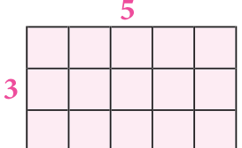
Here, multiplication is represented using grid model. The same can be represented using area model.
The area model helps us to understand multiplication by decomposing the area of large rectangle into areas of smaller rectangles. Also the same example which is discussed above may be decomposed as
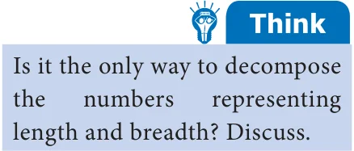
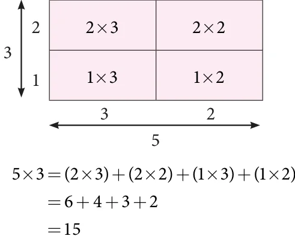
\(\times =( \times )+( \times )+( \times )+( \times\) ) \(= + + + =\)
This decomposition model is very useful when we are finding the product of large numbers.
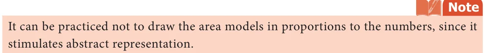
Let us try to extend this concept of multiplication for variables. Take few tiles in rectangular shape of length 'x' and breadth 'y'. Also the area of one tile is xy ( xy ).
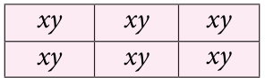
Arrange them as shown in Fig. 3.3 and try to find its area.
In Fig. 3.3, 6 tiles create a rectangular shape. Area of each
tile is xy, hence the area of the shape is \(6 \times\) xy =6xy . ...(1)
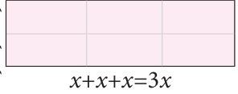
The same area can also be found out by taking the length of the rectangular shape (Fig. 3.4) as \(x + x + x = 3x\) and \(+ + =3\)
breadth as \(y + y = 2y\).
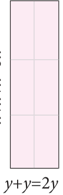
Hence, its area = 3x´2y . ...(2)
Also, the same area (6xy) can be represented by taking the length of the
rectangular shape as y+y=2y and the breadh as x+x+x=3x.
Then the area of the rectangular shape (Fig. 3.5) so obtained \(= 2y \times 3x\). ...(3)
Since all the areas are same, from (1), (2) and (3) we get,
\(+ =2 6xy = 3x \times 2y = 2y \times 3x\). Fig. 3.5
In our earlier discussion, we saw the geometrical representation of 5´3(Fig. 3.1). Here we shall replace the second number 3 with 5. We get, 5´5.
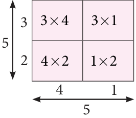
We get the square number \(5 =25\) , that may be represented as
\(5 =(3 \times 4)+(1 \times 3)+(4 \times 2)+(1 \times 2) =12+3+8+2 =25\)
Extending the same for variables in Fig. 3.5, the rectangular area is made into a square by making the length equal to breadth, that is 2y is taken as 3x which becomes the side of the square.
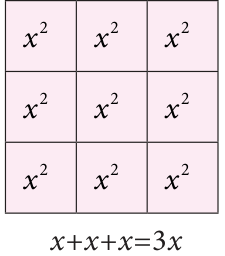
Now in Fig. 3.6 the sides are 3x and area of the square is
\(3x \times 3x\). ...(4)
Also, each area is x and since there are 9 small squares the area of whole square is \(9x^{2}\). ...(5) Fig. 3.6
Since both the areas [(4) and (5)] are equal, we get \(3x \times 3x =9x\) . Let us find the product of x and (a +b). Look at the following figure. In the Fig. 3.7, the two rectangles are combined together to form a new rectangle. Breadth of each of the rectangle are x and their lengths are a and b. So, the length and breadth of the new rectangle are (a +b) and respectively. Fig. 3.7 Thus, Area of Bigger rectangle = Area of rectangle \(1 +\) Area of rectangle 2 Therefore, (a \(+b) \times x =(a \times x)+(b \times\) x) [Distributive property]
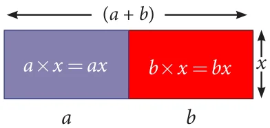
\(=ax +bx\) .
Now, we can conclude that the multiplication of two or more monomials, as given below.
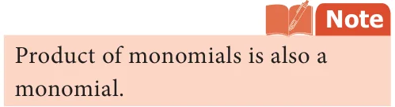
- If the variables are same in both the monomials then,
- multiply the numerical co-efficient of the two monomials, separately.
- multiply the same variable by using the product rule of exponents, that is,
\(a \times a =a\) . For example, \(x \times x = x \times x = x = x\) .
m n m+n 1 1 1+1 2
Also, \(3x \times 2x =(3 \times 2)(x \times x )=6 \times x =6x\) .
2 3 2 3 2+3 5
- If the variables are different in both the monomials, then multiply them by expressing it
as a product of the variables. For example, \(5x \times 4y =(5 \times 4) \times\) (x \(\times y)=20xy\) .
Try these
- Observe the following figures and try to find its area, geometrically. Also verify the same by multiplication of monomial.
- ii) iii)
3yyy 3xxx y{ a +b+c
y x
x x x x 1442443 x 4x
- ii) y 2xxx 3yyy x2xx x14432xx443x
- Let the length and breadth of a tile be x and y respectively. Using such tiles construct as many rectangles as you can and find out the length and breadth of the rectangles so formed such that its area is
- 12xy (ii) 8xy (iii) 9xy